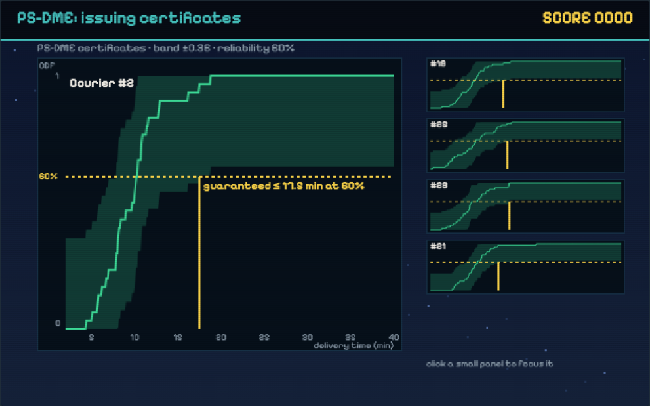
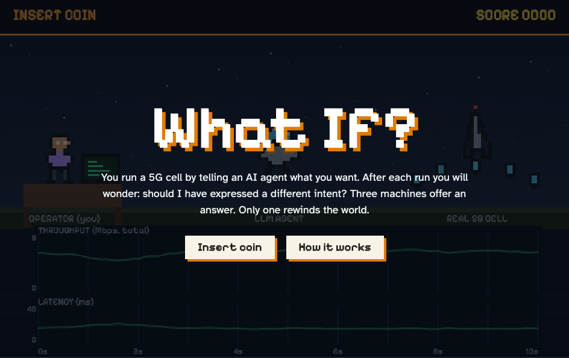

Games
Each paper I publish gets a small retro arcade game that lets you play with its main idea in a few minutes, with no background in machine learning needed. Every game says which paper it is based on and what parts are a toy simplification. Click into a game to play it in your browser; nothing to install.
-

Thirty couriers try out, you keep the five that look fastest, and then you must certify how fast they really are using the same tryout data. The ones that looked best were partly lucky, so naive reuse breaks its certificates too often. Compare naive reuse, data splitting, and the paper's e-value correction, read off guaranteed times at any reliability level, and run 500 seasons to see which protocols keep their word.
Based on the paper Post-Selection Distributional Model Evaluation
Amirmohammad Farzaneh, Osvaldo Simeone · NeurIPS 2026 -

You run a 5G cell by telling an AI agent what you want in plain words. After each run you wonder whether a different instruction would have gone better, and three machines offer to tell you. Only one of them rewinds the world instead of re-running it. A bonus stage shows how to ask for several answers and still guarantee that one of them is right.
Based on the paper Should I Have Expressed a Different Intent? Counterfactual Generation for LLM-Based Autonomous Control
Amirmohammad Farzaneh, Salvatore D'Oro, Osvaldo Simeone · ICML 2026